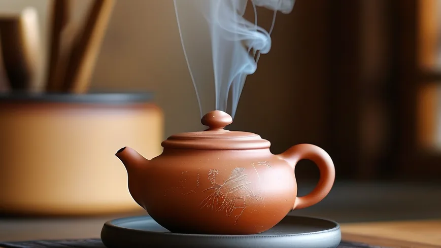

湖北省文化厅公示：鄂派紫砂壶陶艺、武汉剪纸、微雕三个项目拟列入第六批省级非遗代表性项目名录。消息一出，微信茶友群炸了锅：“鄂派也能叫非遗？”“这下宜兴那边得急了吧？”阿凤姐放下手里的茶筛，淡淡一句：“非遗名录是给传承人发护照的，不是给商家贴金的。”
鄂派紫砂≠宜兴紫砂，别搞混了产地
鄂派紫砂源于湖北咸宁赤壁，泥料以当地红粘土为主，烧成色偏红褐，器型多仿明清款，近年才开始自创新款。宜兴紫砂用黄龙山矿料（紫泥、绿泥、红泥），烧成色系完整，器型体系成熟度高。两者泥性不同、工艺谱系不同、市场定位也不同——把“鄂派”硬套“宜兴”标准去评价，或者拿“非遗”标签去抬价，都是外行做法。
阿凤姐眼里的“非遗”含金量
“我做凤凰单丛二十多年，见过太多‘非遗传承人’挂牌子卖茶：茶园不管、制茶不懂、拼配倒是一把好手。真正的非遗保护，护的是种茶人的种子、制茶人的手艺、喝茶人的口碑——不是护那张证书。”
她举例：店里卖的乌岽老丛鸭屎香，种茶人是阿凤姐堂叔林老三，制茶是阿凤姐自己亲炒，喝茶人是年年回购的忠哥、王阿姨、小陈。这条链条上没有“非遗”字样，但每一环都经得起查证。
给买壶人的实在建议
鄂派紫砂入选非遗，对喜欢收藏地域器型的玩家是好事——多一种选择、多一份记录。但如果你是为了日常泡茶好喝，阿凤姐依然建议：认泥料、认器型、认出水、带自己茶来试。店里现有宜兴紫泥、朱泥、段泥、底槽清现货，鄂派器型也有几把样品可对比试泡。

买壶三步：泥料、器型、出水
- 先定泥料：日常用紫泥最稳，容错高；想聚香选朱泥小壶（100-150ml）；段泥好看但怕混泡，一壶一茶最省心。
- 再挑器型：西施圆润短嘴、适合高香单丛；石瓢重心低、出水利落、泡老茶不闷；掇只方圆之间、万茶通吃。
- 现场倒水：水柱成线不散、断水利落、嘴口不挂水，三条过关，日常用就不会难受。
店里有紫泥、朱泥、段泥、底槽清、红皮龙等泥料现货 30 余把，欢迎带自己的茶来试泡验货。地址：惠州市惠城区东湖花园一区沿江商铺 89-136，电话 13435567385（微信同号，支持全国快递）。